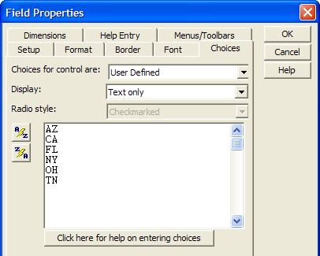
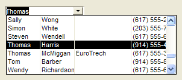
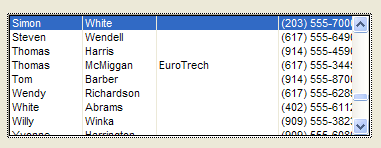
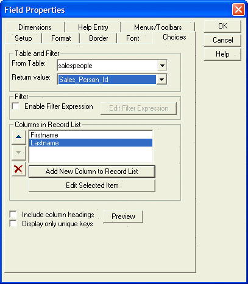
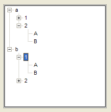

Placing a Data Field on a Form
There are three ways to place data fields onto a form.
Toolbox - by placing a field data control, then selecting the data field to use
Drag-and-Drop List - by placing a table's data field, then selecting the type of data control to use
Object Menu - by placing a field data control, then selecting the data field to use
For specific instructions, refer to:
The Form Editor has a grid that can help you position objects. After opening the Form Editor, click Form > Grid to display the Grid dialog. In this dialog you can set:
Grid spacing
Whether the grid is visible or hidden
Whether objects should snap to the grid
A field label is a text object that is used to label a field so that you know what kind of information the field holds. Since Field Labels are text objects, you can change their appearance (size, font, color, etc.) to suit your needs.
When you place fields using the Drag-and-Drop List, and you set the Object Type box to "Fields with Titles", Alpha Five automatically creates a field label for you. If you did not choose this option, you can create field labels setting the Object Type box to "Field Titles Only", and dragging and dropping field labels the same way you drag and drop fields.
Alternatively, you can create field labels by creating your own text object or cloning an existing field label, discussed in the following section.
Cloning an Existing Field Title
You can clone a text object (or any other object), by dragging and dropping it while holding down CTRL. After you clone the text object, you can double-click on it to edit the text.
Selecting the Appropriate Field Data Control
You will find that you have a number of choices for displaying and editing table data.
|
Button |
Name |
Description |
|
|
Type-In Field |
The default style for all data fields. Allows you to enter and change information by typing directly in the field. |
|
List Box |
Allows you to select values. Limits data entry to values appearing in the list. | |
|
Combo Box |
Similar to a list box, except you can enter a value that does not appear in the list. | |
|
|
Check Box |
You assign values for each of its two states: checked and cleared. For example, you could set the checked value to "Preferred Customer" and when the check box is checked, Alpha would insert the words "Preferred Customer" into a field. |
|
Radio Button |
Provides users with two or more choices. | |
|
Two-State Button |
You assign values for each of its two states. For example, you could set one state to "On" and the other to "Off". | |
|
Multi-State Button |
You assign values for each of its many states. For example, you could 26 buttons for letters of the alphabet. | |
|
|
Tree Control |
Displays structured data, mimicking a directory structure. |
|
|
Drop-Down Tree Control |
Similar to a Tree Control, except you can enter a value that does not appear in the list. |
|
Record List-List Box |
Similar to a List Box, but you can populate the list using record values from any table. | |
|
Drop |
Like a Record-List Box, except you can enter a value that does not appear in the list. |
A type-in control is the default representation of a character or numeric field. The contents of the control directly reflect the contents of the underlying table field.
A list box lets you create a limited assortment of choices for the user. You define these choices on the Choices tab of the object's Field Properties dialog box.

The options you enter in the Choices tab appear in the list box on the form. Additionally, you can choose to auto-populate the choices appearing in your list box. See Setting Choices for List and Combo Boxes for more information.
A check box control has two states: checked and cleared, which normally correspond to TRUE (.T.) and FALSE (.F.). Logical fields are often represented by check boxes. However, the checked and cleared values can be any two values of the same data type.
A set of radio buttons lets you create a limited assortment of choices for the user. You define these choices on the Choices tab of the object's Field Properties dialog box.
A two state button has two states: up (not clicked) and down (clicked), which normally correspond to TRUE (.T.) and FALSE (.F.). Logical fields are often represented by check boxes. However, the checked and cleared values can be any two values of the same data type.
A combo box is a text box with an attached list box. The list is populated with values the user can choose from, but a value not in the list can be entered as well. You define these choices on the Choices tab of the object's Field Properties dialog box.
Record list controls are very versatile as they show data from any table, including tables not part of a current set. Unlike standard combo boxes and list boxes, the record list controls are dynamically populated from their source tables. Also (unlike standard controls) there is no size limit for the table that can be displayed in a record list control.
An example record-list combo box control:

Record-List Combo Box Control
The following diagram shows a record list-list box control:

To set up a record list control, use the Choices tab in the Field Properties dialog, and fill in the prompts.

Using record list controls, you can create lookups for variables. This is extremely useful because the standard way of defining a lookup (for example, in Field Rules) applies only to physical fields, not variables that you place on a Form.
The tree control is very familiar to Windows users as many of the standard Windows user interfaces, such as the Windows Explorer, use a tree control. A tree control is a variation of a list box. Like a list box, a tree control displays an array of values. In the case of the tree control, however, the array of values must be specially formatted to represent the hierarchy of the tree. Refer to Setting Choices for Tree Controls.
The period is used to indicate different levels of the hierarchy. For example, consider an array with the data:
a.1.A a.1.B a.2.A a.2.B b.1.A b.1.B b.2.A b.2.BThis data represents a tree with two top-level branches ("a" and "b"). The "a" branch has two second level branches ("1" and "2"), and the "1" branch has two third level branches ("A" and "B"), and so on. Picture
{kind=link}

If the Toolbox is not visible, select Task List > Toolbox or click .
Select one of the data controls and sketch its bounding rectangle on the form.
If you are creating a data control with multiple choices (a radio button, check box, list box, or tree control) you can set the choices that appear in the Properties dialog box. This is discussed in Setting Field Properties.
You can place a table field on a form by selecting one of the data controls from the menu.
Select Object > New... to display the New Object dialog box
Select the appropriate control from the list and click OK.
Depending on the type of object, various menus will appear. Enter the appropriate values and click OK.
The new object will appear as a small rectangle in the upper left corner of the form. Select it and drag it to its new location.
Select a side or corner of the object's bounding rectangle and stretch it to its appropriate size.
You can clone a text object (or any other object):
Hold down CTRL.
Select the object you want to clone and drag it to a new location
See Also
Field Properties, Setting Field Properties